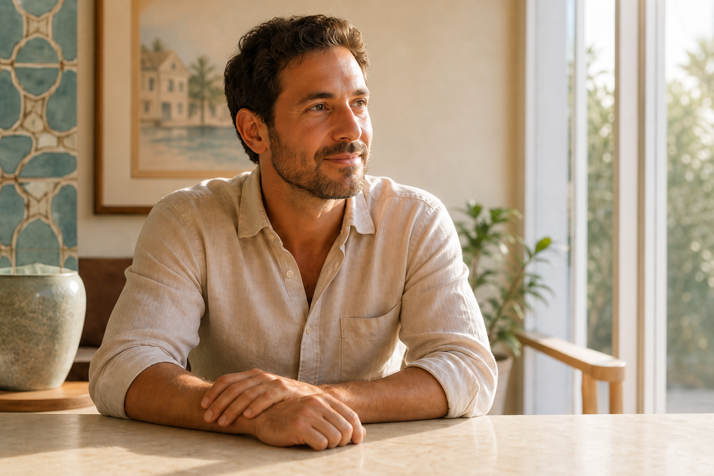

Continuing education
Ongoing training keeps the practice current with conservative techniques and restorative materials.

Meet your dentist
Dr. Arnouk is known for conservative dentistry, careful mentoring, and a commitment to continuing education. His goal is to help patients choose treatment with confidence.
“The best dentistry is the least dentistry.”
Practice philosophy
The office focuses on diagnosis, prevention, education, and treatment that preserves natural tooth structure whenever possible.
Ongoing training keeps the practice current with conservative techniques and restorative materials.
Teaching and mentoring reinforce a thoughtful approach to clinical decision-making.
Every recommendation is explained in plain language so patients understand their choices.